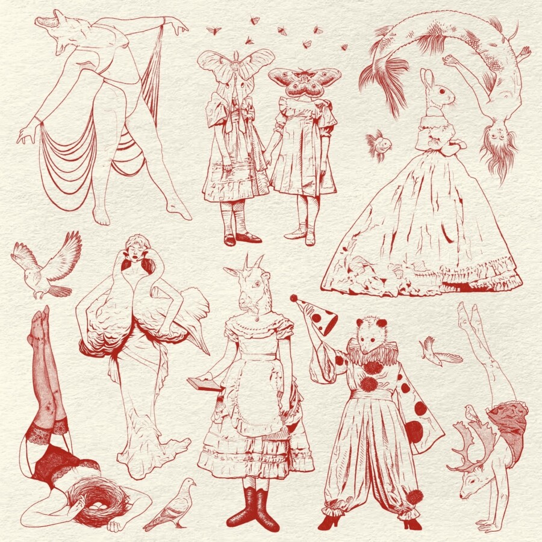

Spring Fling
Join nonprofit NEW Gallery for the opening reception of Spring Fling.
Spring Fling brings together a vibrant selection of artworks inspired by the energy and renewal of the season. Curated from an open call inviting artists to explore themes of rebirth, color, light, and movement, the exhibition highlights a range of mediums and interpretations.
Whether responding with vivid palettes, blooming landscapes, or quiet symbols of transformation, the work featured in Spring Fling captures the sense of optimism and possibility that arrives after the long stillness of winter.